Skills
Programming Languages
 Python
SQL
R
Bash
Scala
Python
SQL
R
Bash
Scala
Data Engineering
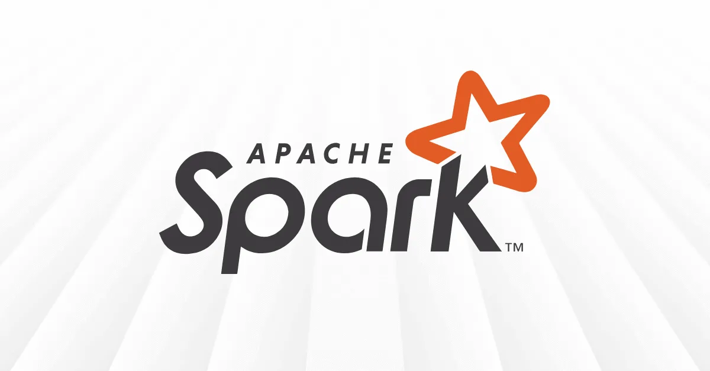
Apache Spark dbt Apache Airflow Kafka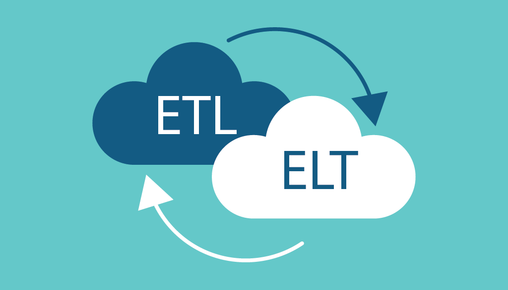
ETL/ELT PipelinesCloud & Infrastructure
 Amazon Web Services (AWS)
Amazon S3
AWS Glue
Amazon Redshift
Amazon Web Services (AWS)
Amazon S3
AWS Glue
Amazon Redshift
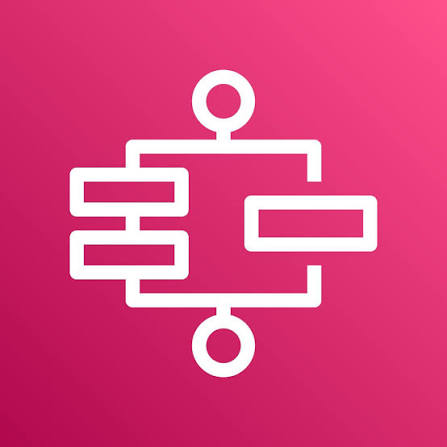
AWS Step Functions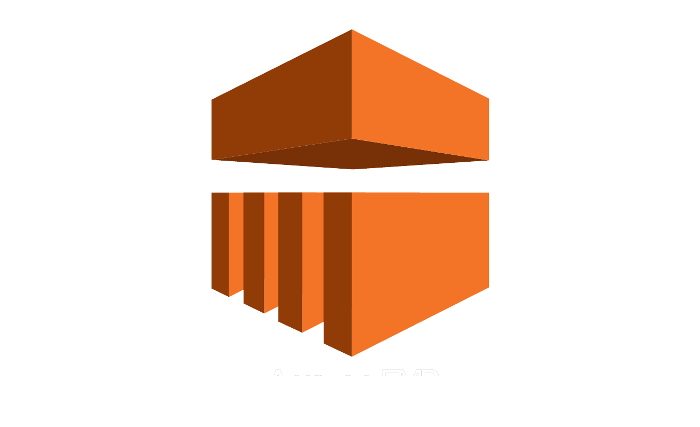
Amazon EMR Amazon Athena Amazon CloudWatch Docker
Docker
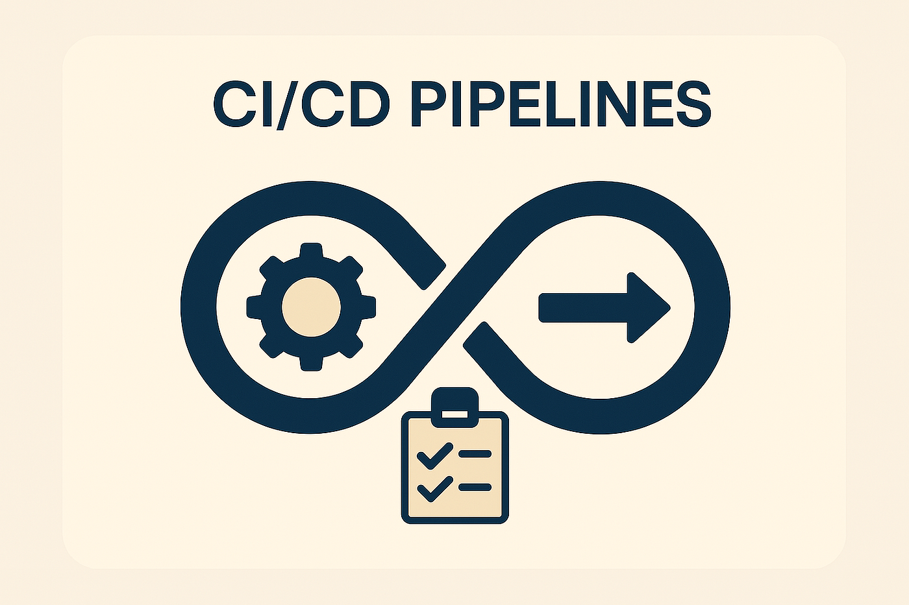
CI/CDData Visualization
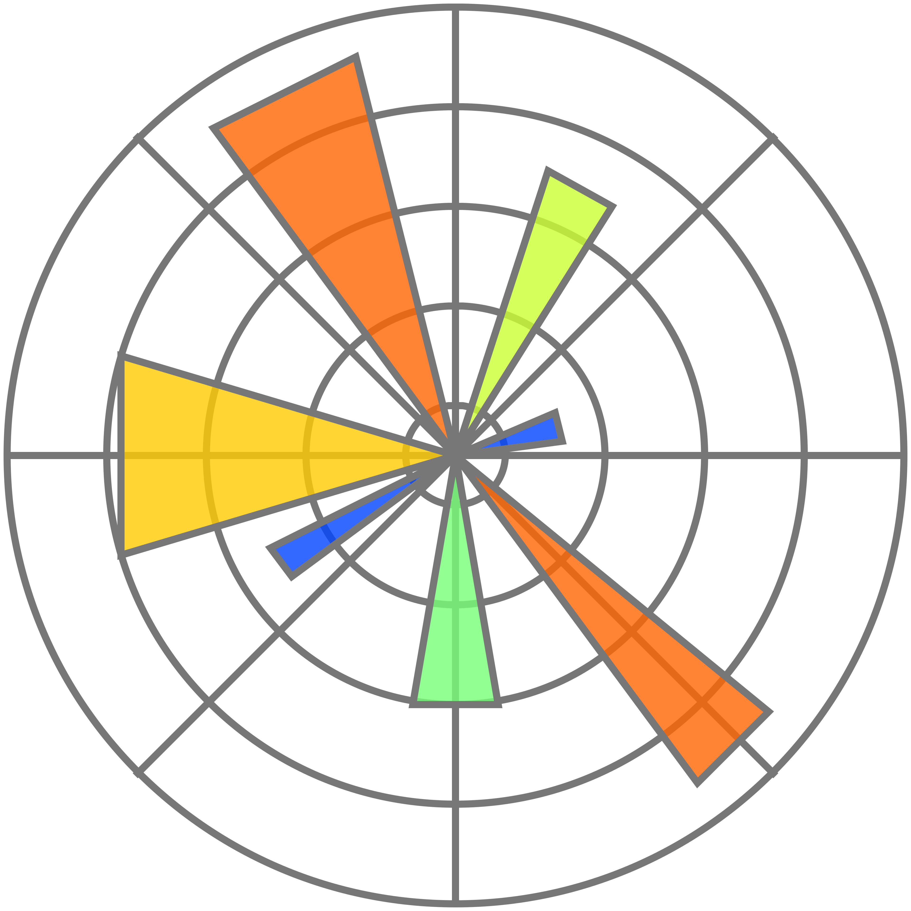
Matplotlib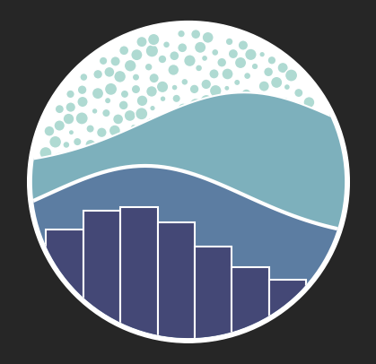
Seaborn Tableau
Power BI
Amazon QuickSight
Tableau
Power BI
Amazon QuickSight
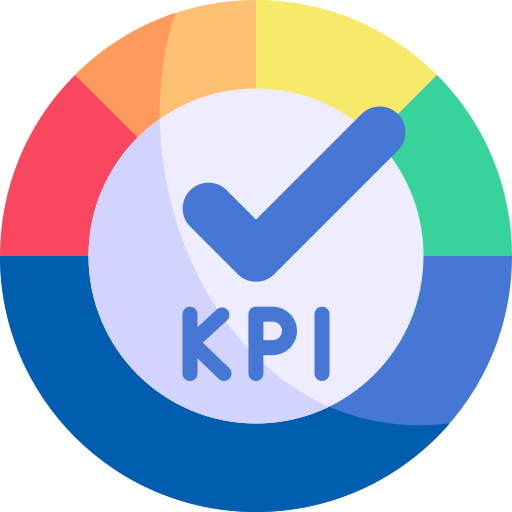
KPI Tracking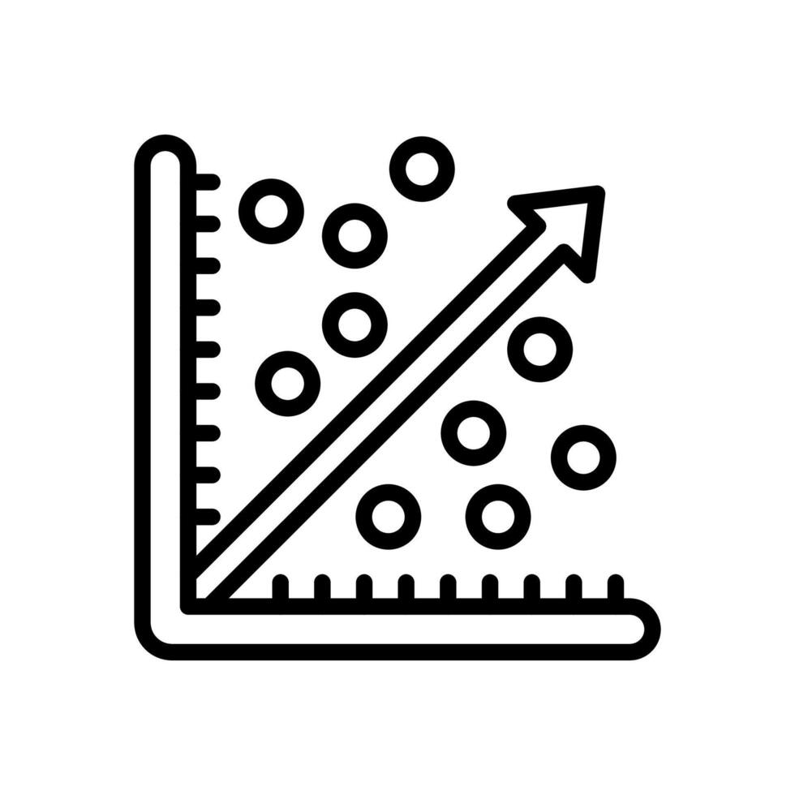
Regression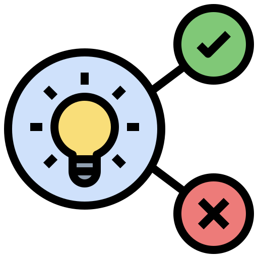
Hypothesis Testing ExcelMachine Learning & AI
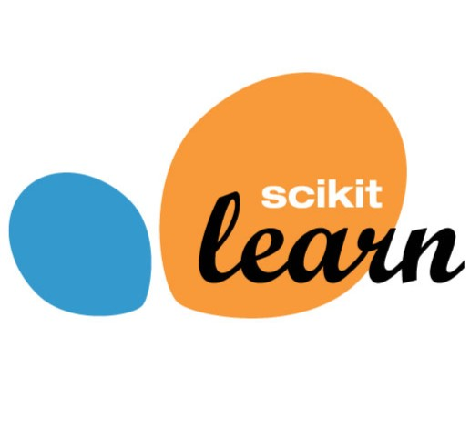
Scikit-learn XGBoost
XGBoost
 TensorFlow
TensorFlow
 PyTorch
Keras
SpaCy / NLP
PyTorch
Keras
SpaCy / NLP
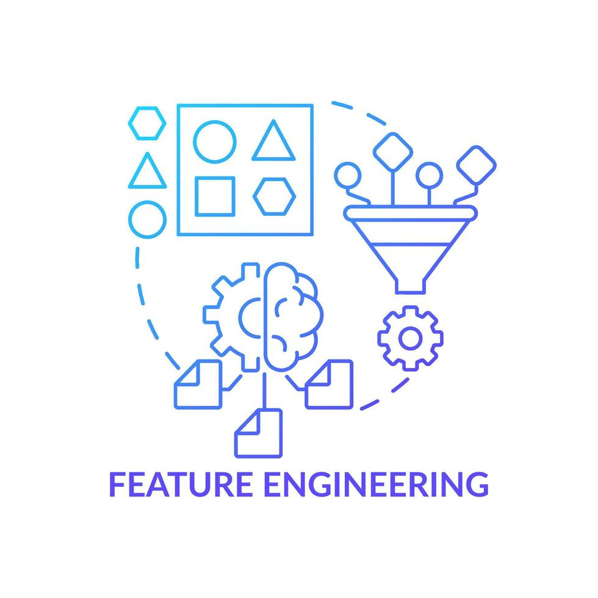
Feature Engineering Anomaly Detection A/B Testing
LangChain
A/B Testing
LangChain
 Hugging Face
Hugging Face
Databases
 MySQL
MySQL
 PostgreSQL
MongoDB
SQLite
NoSQL
PostgreSQL
MongoDB
SQLite
NoSQL
Other Skills
 Git / GitHub
Git / GitHub
 Flask / FastAPI
Time Series Analysis
MLOps
Geospatial Analysis
Flask / FastAPI
Time Series Analysis
MLOps
Geospatial Analysis